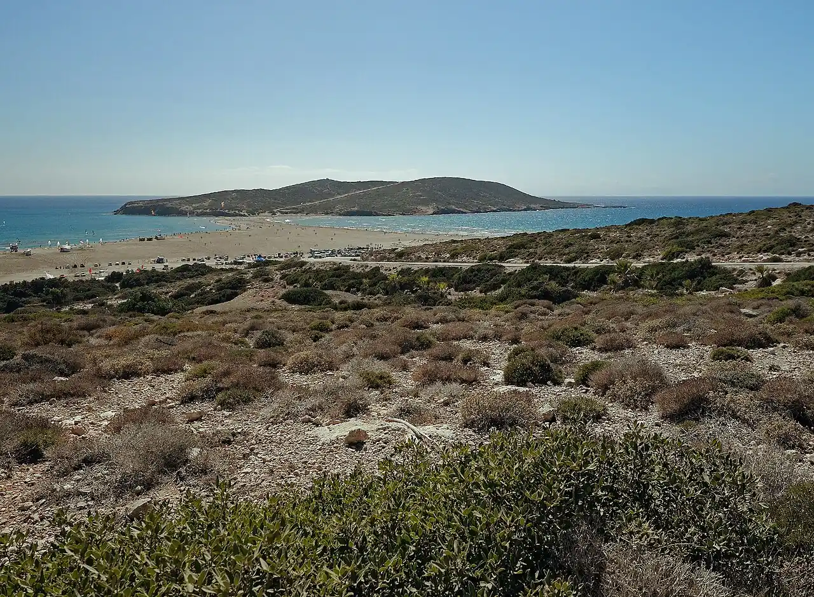

Prasonisi
Rhodes, Grèce · windsurf, kitesurf

Isthme de sable à la pointe sud de Rhodes qui relie l’île à l’îlot de Prasonisi. D’un côté un plan d’eau plutôt plat, de l’autre des vagues : un spot de glisse réputé, balayé par le meltem.
- Lieu
- Rhodes, Grèce
- Niveau
- Variable selon les conditions
- Activités
- windsurf, kitesurf
- Type d'eau
- Mer / océan
- Coordonnées
- 35.89, 27.77 (position approximative du secteur)
Dangers à connaître
- Meltem fort et rafaleux en été.
- Côté vagues : courants et shore break.
Le conseil d'Ocean Buddy
Choisis ton côté selon ton niveau : l’eau plate pour progresser, le côté vagues seulement si tu es autonome.
Ouvrir dans Ocean Buddy Télécharger sur l'App Store
Source : Fiche Ocean Buddy · septembre 2026 · à vérifier localement.